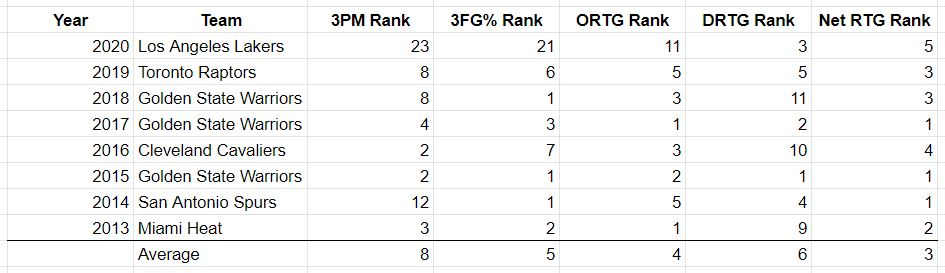
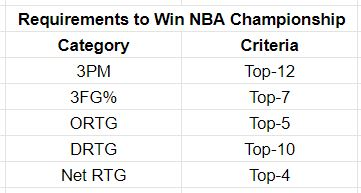
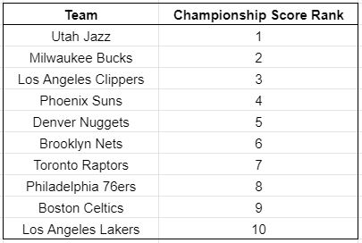
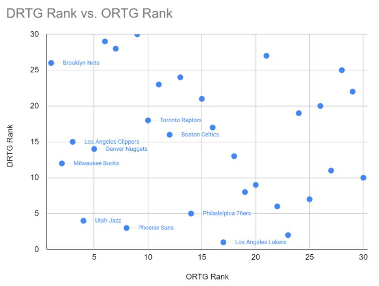
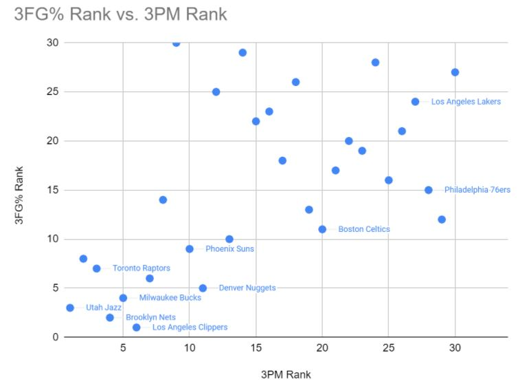
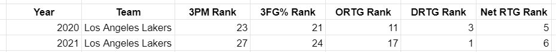
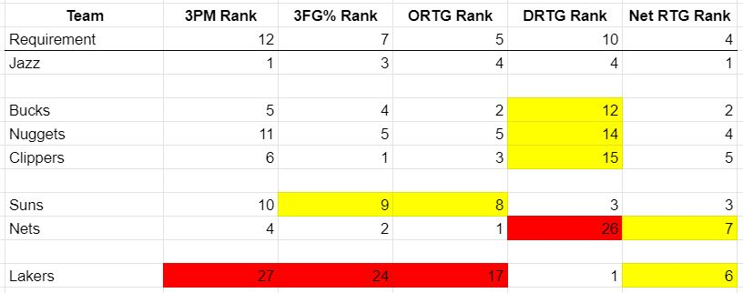

Blog

Image via DeviantArt.com by llu258
NBA 2021 Mid-Season Review
By Zach Hales, CouchGM on March 9, 2021With the NBA Season at the halfway point, let’s look at which teams are true championship contenders.
Now that the NBA season has reached the halfway point, it’s time to evaluate the teams. As CouchGM likes to do, we’ll first look back at recent history to establish our baseline for comparison. In our NBA Draft 101 piece, we established the most important characteristics of championship teams: offensive rating, defensive rating, three-point shooting percentage, and three-pointers made. We also concluded that good offense is more important than good defense. Here we've added Net Rating and updated that comparison with the addition of the 2020 NBA Champion Los Angeles Lakers in the table below.
As a reminder, offensive rating (ORTG) is an estimate of points scored per 100 possessions, defensive rating (DRTG) is an estimate of points allowed per 100 possessions, and net rating (Net RTG) is net points per 100 possessions, or ORTG minus DRTG.
What immediately jumps out to me is that the 2020 Lakers are the outliers of recent history. 7 of the last 8 champions ranked in the top-12 for 3PM (made threes), in top-7 in the league for 3FG% (three-point shooting percentage), and in the top-5 for ORTG. The Lakers are the 1 out of the last 8 that did not meet those criteria, and they ranked significantly lower than everyone else. But 2020 was an outlier year, anyway, due to the COVID-19 pandemic. And the 2020 Lakers did have LeBron James and Anthony Davis, which can make up for a lot.
So in conclusion, I see two ways to build a champion:
1) Elite offense with good-to-great defense and three-point shooting
or
2) Elite defense and LeBron James
We’ll quantify those requirements by selecting a criteria met by 7 out of the last 8 champions in each category. This table summarizes those requirements:
6 of the last 8 champions met all 5 criteria, a 7th met 4 out of 5 (and was 11th in DRTG instead of top-10), and the last was the 2020 Lakers, who only met the defense requirement.
Next, all 30 teams were ranked in those categories, and the rankings were weighted and combined into an overall “Championship Score,” which is CouchGM’s ranking of teams most likely to win the NBA championship. Here are the top-10 teams in Championship Score.
As of the all-star break, these 10 are also FiveThirtyEight’s top-10 teams in chance of winning the championship, although in a different order.
In the following charts, the top-10 teams in Championship Score are labelled. Stats are updated from NBA.com as of the All-Star break on 3/7/2021.
Here, farther left means better offense and farther down means better defense. So the Jazz, Suns, 76ers, and Lakers are among the best defensively and the Nets, Clippers, Nuggets, Bucks, Jazz, and Suns are among the best offensively. Only the Jazz and Suns rank in the top-10 for both offense and defense and only the Jazz rank in the top-5 for both.
Here farther left is greater volume of threes made and father down is greater shooting percentage. The 76ers and Lakers are lacking in three-point shooting. The 76ers are decent for shooting percentage, but just don’t shoot enough. The Lakers don’t shoot many and don’t make them at a high enough percentage. The Celtics shoot a slightly above-average percentage but with below-average volume. The rest of our teams are above-average or better in volume and percentage.
Even given the Lakers’ weakness in shooting, I’m not convinced that the Raptors (7th in Championship Score) have a better chance at winning the Finals than the Lakers (10th). The Lakers still have the GOAT (LINK) and Anthony Davis, and their rotation has been in disarray with absences by Davis, Schroder, Gasol, and others. They actually rate remarkably similarly this year to last year:
A little worse on offense and a little better on defense. Full-strength they are better than they’ve looked so far, which was still good enough for the #3 spot in the west at the halfway point. And they still have elite defense plus LeBron.
With that in mind, I’d further reduce the top-10 to a top-7 as follows:
(highlighted in yellow are near-misses and highlighted in red are major misses).
The Jazz, who are the only team to rate in the top-5 in each of the 5 categories (and the only team to meet all 5 criteria), look like the best team so far. The Nuggets, Clippers, and Bucks all meet 4 out of 5 criteria (the exception being defense). The Suns meet 3 and narrowly miss the other 2. The Nets also meet 3, with the major problem being defense. If the defense was even average, they’d probably be top-5 in NetRTG. And as stated above, I think the Lakers are better than they've shown.
The 2021 NBA Champion will be one of the Jazz, Bucks, Clippers, Suns, Nuggets, Nets, and Lakers. Guaranteed.
back to blogRecent Posts

Can Kyler Murray win a Superbowl?
By Zach Hales, CouchGM on February 2, 2021What kind of QB does it take to win a Superbowl? Can Kyler Murray become that QB? Let's look at the last 10 Superbowl winners to find out.
Read More